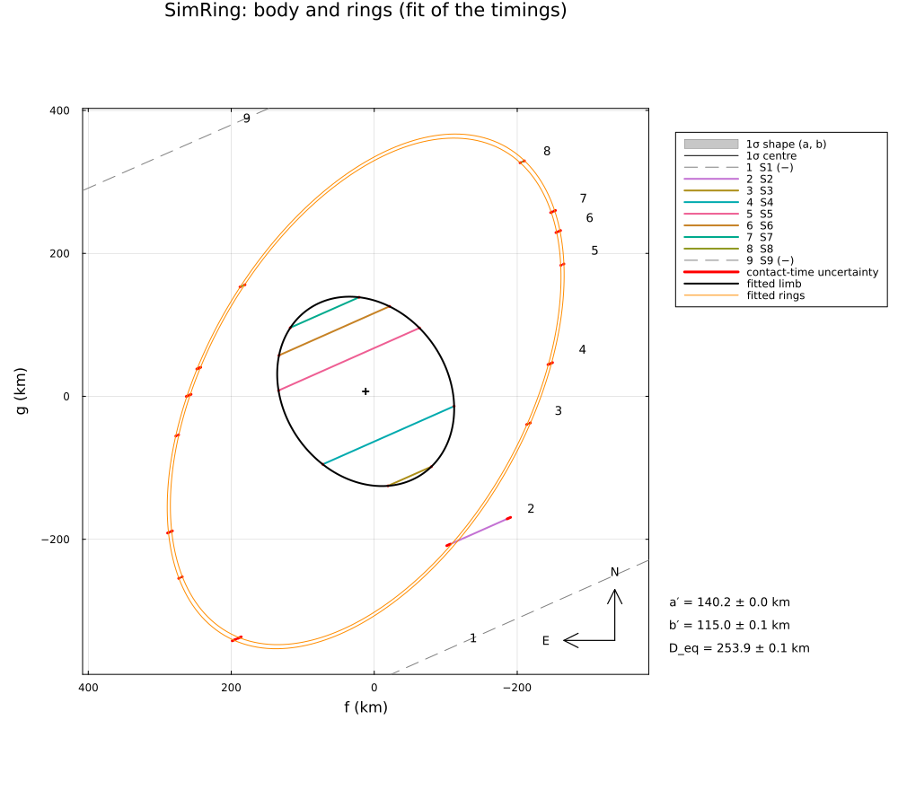
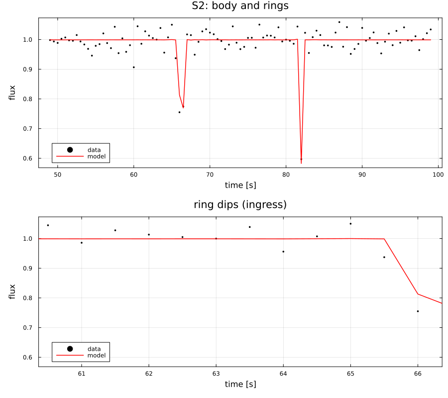

Synthetic: a body with two narrow rings
A simulated occultation by a Centaur with two narrow rings (Chariklo-like: rings of 6 and 3 km width at 391 and 405 km, as Braga-Ribas et al. 2014; normal optical depths 0.4 and 0.15, the outer ring a little denser than Chariklo's; seen at an opening angle of 35°), reduced with RingedLimb:
- nine stations at random offsets, on land, in the dark, spread along the track, with their own equipment, from GPS-timed video to visual timings (exposures 0.04–1 s): as in a real campaign, some light curves are too noisy or too coarse to show the narrow rings; the light curves show the body and the dips of the rings, with diffraction (the rings are a few Fresnel scales wide) and the finite exposures;
- the body and the detectable ring dips are timed (the ring dips with their apparent opacity), each ring dip assigned to its ring;
- the fit of the timings: the body, the ring pole, the radii and widths of the rings;
- the joint fit of the light curves: the optical depths of the rings as well.
The truth is known and printed next to the fitted values. Run it with:
julia --project=. examples/sim_rings.jl [output_dir] (default: examples/output/sim_rings)The code is not run when the manual is built. The output after each section is that of the last run of examples/sim_rings.jl, stored in examples/output/sim_rings/output.txt.
using Occultations, Random, Printf, Statistics
using Plots
import CairoMakie # saves the GeoMakie maps (Makie figures)
include(joinpath(@__DIR__, "standard_figures.jl"))
include(joinpath(@__DIR__, "sim_stations.jl")) # stations on land, in the dark, with their equipment
out = length(ARGS) >= 1 ? ARGS[1] : mkpath(joinpath(@__DIR__, "output", "sim_rings"))
rng = MersenneTwister(2014)1. the simulated event
eph = EphemKeplerian(a=15.8, e=0.17, i=23.4, Ω=300.4, ω=242.0, M=10.0, epoch=Epoch("2024-01-01"), name="SimRing")
body = Body("SimRing", eph; radius=125.0)
t0 = Epoch("2025-04-17T13:00:00")
ra, dec, _ = ephem_radec(body, t0)
star = Star(ra + 0.002 / 3600 / cosd(dec), dec; name="SimStar R", ra_err=0.1, dec_err=0.1)
ev = Event(star, body, t0; name="SimRing") # simulated: no date in the plots
D = ev.ca.dist_km
sd = apparent_diameter(star, D)
@printf("distance %.2f au, shadow velocity %.2f km/s, Fresnel scale %.2f km at 0.6 µm\n", D / 1.495978707e8, ev.ca.vel,
fresnel_scale(0.6, D))The truth: the body an ellipse of 140 × 115 km; two rings around it, seen at the opening angle B = 35° with the projected pole at the position angle P = 60° (the pole follows from them and the line of sight); the system 12 km east and 7 km north of the ephemeris.
center = (12.0, 7.0)
truth_body = EllipseOutline(140.0, 115.0, 125.0)
u = EventContext(ev).u
pole = Occultations._ring_pole(35.0, 60.0, u)
@printf("ring pole RA %.2f°, Dec %+.2f°\n", pole...)
rings = [project_ring(391.0, 6.2, 0.40, pole..., u), project_ring(405.0, 3.4, 0.15, pole..., u)]
for (k, rg) in enumerate(rings)
println("ring $k: ", rg)
enddistance 12.38 au, shadow velocity 20.89 km/s, Fresnel scale 0.75 km at 0.6 µm
ring pole RA 303.71°, Dec +41.17°
ring 1: ProjectedRing(r = 391.00 km, W = 6.20 km, p′ = 0.502, P = 60.00°, B = 35.00°)
ring 2: ProjectedRing(r = 405.00 km, W = 3.40 km, p′ = 0.230, P = 60.00°, B = 35.00°)2. light curves → body and ring dips → timings
# nine stations at random offsets across the path (the rings reach 405 km from the body)
offsets = random_offsets(MersenneTwister(7), 9, -470.0, 470.0; mingap=20.0)
pv = positionv(star, eph, GEOCENTER, ev.tref)
n̂ = (-pv.vg, pv.vf) ./ hypot(pv.vf, pv.vg)
sites = stations(star, body, ev.tref, offsets .+ (center[1] * n̂[1] + center[2] * n̂[2]); rng=rng)
# the velocity of the shadow normal to an outline o at the instant τ of a track
function vnormal(tr, o, τ)
f, g = tr(τ)
nx, ny = limb_normal(o, f - center[1], g - center[2])
vf, vg = velocity(tr, τ)
return max(abs(vf * nx + vg * ny), 0.05)
endIn a real reduction the analyst identifies each drop: the body, and the dips of the rings by their symmetry about the body and by comparison with the neighbouring chords. Here this step uses the simulated geometry: every drop detectable at a signal-to-noise ratio of at least 5 is timed in its own window (between the neighbouring drops) with the diffraction model, the ring dips with their apparent opacity free; a faint dip in a noisy light curve is missed. (Blind searches: detect_occultations(lc; method=:threshold) for deep drops, the box search detect_occultations(lc; snr_limit, maxdur) for short, shallow dips.)
for st in sites
obs = st.observer
_, _, texp, noise = st.equipment
tr = Track(star, body, obs, ev.tref, st.τ - 120, st.τ + 120)
# the true drops: the body (opaque) and the passages through each ring (partly transparent)
drops, vi, ve, op, lab = Tuple{Float64,Float64}[], Float64[], Float64[], Float64[], Symbol[]
for (a, b) in predicted_contacts(ev, obs, truth_body; center=center, window=abs(st.τ) + 200, step=0.02)
push!(drops, (a - ev.tref, b - ev.tref)); push!(op, 1.0); push!(lab, :auto)
push!(vi, vnormal(tr, truth_body, a - ev.tref)); push!(ve, vnormal(tr, truth_body, b - ev.tref))
end
bod = copy(drops)
for (k, rg) in enumerate(rings), (a, b) in predicted_contacts(ev, obs, rg; center=center, window=abs(st.τ) + 200)
# a ring passage in front of (or behind) the body is not seen
any(x -> a - ev.tref < x[2] && b - ev.tref > x[1], bod) && continue
edge = Occultations._ring_edges(rg)[1]
push!(drops, (a - ev.tref, b - ev.tref)); push!(op, rg.opacity); push!(lab, Symbol("ring", k))
push!(vi, vnormal(tr, edge, a - ev.tref)); push!(ve, vnormal(tr, edge, b - ev.tref))
end
tc = round(isempty(drops) ? st.τ : mean(first.(drops)))
t = collect(range(tc - 25, tc + 25; step=texp))
lc = simulate_lightcurve(t, drops; tref=ev.tref, vel=vi, vel_emersion=ve, opacity=op, dist=D, star_diam=sd,
λ=0.6, σ=noise, exptime=texp, rng=rng, name=obs.name)
# timing of every detectable drop, in a window between its neighbours
o = sortperm(first.(drops))
cs = Contact[]
nfound = 0
for (q, i) in enumerate(o)
a, b = drops[i]
dur = b - a
snr = op[i] * min(1, dur / texp) * sqrt(max(1, dur / texp)) / noise # depth × √(points) / noise
snr >= 5 || continue
lo = q == 1 ? t[1] : (drops[o[q-1]][2] + a) / 2
hi = q == length(o) ? t[end] : (b + drops[o[q+1]][1]) / 2
ring = lab[i] !== :auto
tf = fit_timing(lc; vel=ev.ca.vel, dist=D, star_diam=sd, tmin=lo, tmax=hi, immersion=a, emersion=b,
fit_opacity=ring, opacity=ring ? 0.5 : 1.0, rng=rng)
c = contact_times(tf)
# a short, partly transparent dip: its timing errors are at least a quarter of an exposure
σi, σe = ring ? (max(c.immersion_err, texp / 4), max(c.emersion_err, texp / 4)) : (c.immersion_err, c.emersion_err)
push!(cs, Contact(:immersion, c.immersion, σi; body=lab[i]), Contact(:emersion, c.emersion, σe; body=lab[i]))
ring && (nfound += 1)
end
sort!(cs; by=x -> x.time)
push!(ev, isempty(cs) ? Chord(obs.name, obs, lc) : Chord(obs.name, obs; contacts=cs, lightcurve=lc))
@printf("%-4s %8.2f° %7.2f° %-18s %.2f s, σ %.2f body: %s ring dips: %d of %d detected\n", obs.name, obs.lon,
obs.lat, st.equipment[1], texp, noise, isempty(bod) ? "–" : "yes", nfound, count(<(1.0), op))
endS1 136.33° -29.71° video, GPS-timed 0.04 s, σ 0.10 body: – ring dips: 0 of 0 detected
S2 138.97° -29.72° CCD, long cycle 0.50 s, σ 0.03 body: – ring dips: 2 of 4 detected
S3 132.63° -24.94° video, GPS-timed 0.04 s, σ 0.10 body: yes ring dips: 2 of 4 detected
S4 135.77° -26.10° CMOS camera, NTP 0.20 s, σ 0.04 body: yes ring dips: 2 of 4 detected
S5 140.11° -27.23° video, GPS-timed 0.04 s, σ 0.10 body: yes ring dips: 2 of 4 detected
S6 139.67° -26.53° CMOS camera, NTP 0.20 s, σ 0.04 body: yes ring dips: 2 of 4 detected
S7 133.76° -22.83° CMOS camera, NTP 0.20 s, σ 0.04 body: yes ring dips: 2 of 4 detected
S8 140.72° -25.94° video, GPS-timed 0.04 s, σ 0.10 body: – ring dips: 2 of 4 detected
S9 133.66° -19.60° CCD, long cycle 0.50 s, σ 0.03 body: – ring dips: 0 of 0 detected3. fit of the timings
The body (an ellipse), the ring pole and the radii and widths of the rings with detected dips (a ring without any would have no data). The timings do not constrain the optical depths: they are fixed here and fitted with the light curves below.
nr = any(c -> any(x -> x.body === :ring2, c.contacts), ev.chords) ? 2 : 1
println("rings with detected dips: ", nr)
fixτ = [Symbol("ring", k, "_tau") for k in 1:nr]
r1 = fit_limb(ev; model=RingedLimb(EllipseLimb(); rings=nr), fix=fixτ, init=Dict(n => 0.3 for n in fixτ), rng=rng)
display(r1)
row(r, n, tv) = @printf(" %-22s %9.3f ± %6.3f (truth %8.3f)\n", n, r[n]..., tv)
println("fitted vs true:")
B, P = ring_geometry(pole..., u)
for (n, tv) in ((:equatorial_radius, 140.0), (:semi_minor_axis, 115.0), (:ring_pole_ra, pole[1]), (:ring_pole_dec, pole[2]),
(:ring_opening, B), (:ring_pa, P), (:ring1_radius, 391.0), (:ring1_width, 6.2), (:ring2_radius, 405.0),
(:ring2_width, 3.4))
n in r1.names || haskey(r1.derived, n) || continue
row(r1, n, tv)
end
println("(a single event fixes the ring ellipse – its radius, |B| and P – but leaves the pole with a")
println(" twofold ambiguity: the pole tilted towards or away from the observer)")With this sparse campaign only the inner ring is detected, at two of its four crossings per station; the faint outer ring is missed. The ring geometry comes out to 0.3 km and 0.1°, but the timing of a short, partly transparent dip trades its duration against its opacity, and its errors are underestimated (χ²/dof ≫ 1). The light curves themselves settle the width and the optical depth:
rings with detected dips: 1
LimbProblem fit: χ² = 902.337, dof = 29, χ²/dof = 31.115
center_f = 11.977078 ± 0.030249
center_g = 6.913330 ± 0.035608
equatorial_radius = 140.163383 ± 0.040277
oblateness = 0.179557 ± 0.000558
position_angle = 124.849077 ± 0.062929
ring_pole_ra = 303.729100 ± 0.022363
ring_pole_dec = 41.073541 ± 0.036195
ring1_radius = 391.277314 ± 0.156845
ring1_width = 6.241045 ± 0.132657
ring1_tau = 0.300000 (fixed)
derived:
offset_ra = 1.334417 ± 0.003370
offset_dec = 0.770243 ± 0.003967
equivalent_radius = 126.957658 ± 0.027539
semi_minor_axis = 114.996131 ± 0.056660
ring1_equivalent_depth = 1.872313 ± 0.039797
ring_opening = 34.984992 ± 0.018319
ring_pa = 60.119306 ± 0.043302
ring1_opacity = 0.407397 ± 0.000142
ring1_equivalent_width = 2.542580 ± 0.054077
fitted vs true:
equatorial_radius 140.163 ± 0.040 (truth 140.000)
semi_minor_axis 114.996 ± 0.057 (truth 115.000)
ring_pole_ra 303.729 ± 0.022 (truth 303.711)
ring_pole_dec 41.074 ± 0.036 (truth 41.172)
ring_opening 34.985 ± 0.018 (truth 35.000)
ring_pa 60.119 ± 0.043 (truth 60.000)
ring1_radius 391.277 ± 0.157 (truth 391.000)
ring1_width 6.241 ± 0.133 (truth 6.200)
(a single event fixes the ring ellipse – its radius, |B| and P – but leaves the pole with a
twofold ambiguity: the pole tilted towards or away from the observer)4. joint fit of the light curves
The light curves against the body and the rings: the rings are partly transparent strips (apparent opacity from the normal optical depth and the opening angle), with diffraction, the stellar disc and the exposure; all parameters free, from the fit of the timings. Where the exposures are comparable to the duration of a ring crossing, the width and the optical depth of a ring are correlated: their product, the equivalent depth W τ_N, is the robust quantity.
init = Dict(zip(r1.names, r1.values))
r2 = fit_limb(ev; model=RingedLimb(EllipseLimb(); rings=nr), photometry=true, init=init, starts=1, rng=rng)
@printf("χ²/dof = %.3f for %d light-curve points\n", reduced_chi2(r2), r2.dof + length(freenames(r2)))
for (n, tv) in ((:ring1_radius, 391.0), (:ring1_width, 6.2), (:ring1_tau, 0.40), (:ring2_radius, 405.0),
(:ring2_width, 3.4), (:ring2_tau, 0.15), (:ring1_equivalent_depth, 6.2 * 0.40),
(:ring2_equivalent_depth, 3.4 * 0.15), (:ring_opening, B), (:ring_pa, P))
n in r2.names || haskey(r2.derived, n) || continue
row(r2, n, tv)
endχ²/dof = 1.020 for 5941 light-curve points
ring1_radius 391.283 ± 0.017 (truth 391.000)
ring1_width 6.136 ± 0.027 (truth 6.200)
ring1_tau 0.425 ± 0.014 (truth 0.400)
ring1_equivalent_depth 2.608 ± 0.085 (truth 2.480)
ring_opening 34.984 ± 0.002 (truth 35.000)
ring_pa 60.106 ± 0.003 (truth 60.000)Figures
savefig(plot(r1; title="SimRing: body and rings (fit of the timings)", size=(1000, 900)), joinpath(out, "rings_fit.png"))
# a light curve that crosses both rings: the dips with the model of the joint fit
best = argmax([2count(x -> x.body === :ring2, c.contacts) + count(x -> x.body === :ring1, c.contacts) for c in ev.chords])
c = ev.chords[best]
lc = c.lightcurve
I = model_lightcurve(r2, c.name)[2]
rt = [x.time - lc.tref for x in c.contacts if x.body in (:ring1, :ring2)]
panels = [plot(lc; model=I, title="$(c.name): body and rings", xguide="time [s]")]
isempty(rt) || push!(panels, plot(lc; model=I, title="ring dips (ingress)", xguide="time [s]",
xlims=(minimum(rt) - 2, minimum(rt) + 4)))
savefig(plot(panels...; layout=(length(panels), 1), size=(900, 400length(panels))), joinpath(out, "rings_lightcurve.png"))
lon0, lat0 = mean(st.observer.lon for st in sites), mean(st.observer.lat for st in sites)
standard_figures("rings", r1; out=out, projection="+proj=laea +lon_0=$(round(lon0)) +lat_0=$(round(lat0))",
limits=(lon0 - 20, lon0 + 20, lat0 - 14, lat0 + 14), window=300, marks=0)
println("figures written to ", out)The fit of the timings: the body and the two rings with the chords:
Bias. The radius and the position angle of the ring deviate from the truth by 0.28 km and 0.11°, many times their formal errors (0.017 km, 0.003°): with few, partly coarse light curves the covariance errors of the joint fit are too small. They should be taken as lower limits here; a posterior or a coverage test over several simulations would give realistic errors.

A light curve crossing both rings, with the model of the joint fit:
